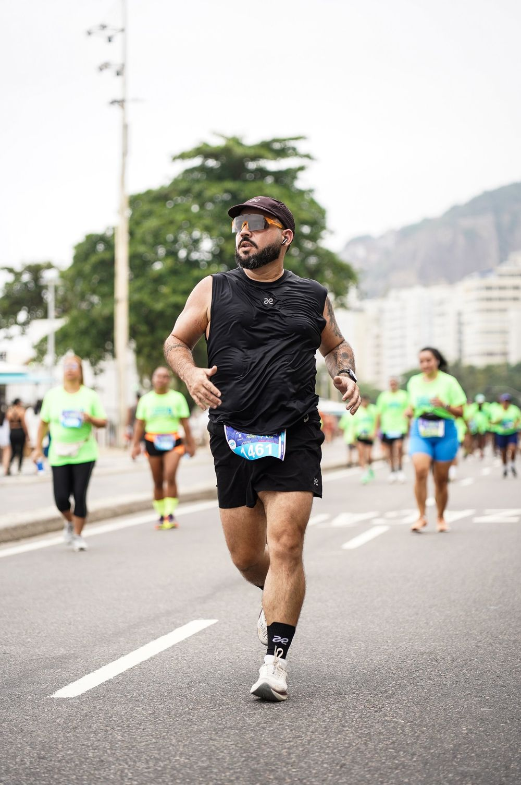

Mídia kit · novembro de 2026
Corre junto
com a gente
Publicitário, pós-graduado em influência digital e corredor amador. Penso a peça com olhar de marca e entrego com cara de quem usa de verdade.

65 milpessoas alcançadas em um único post
149,7 milvisualizações no Instagram em 30 dias
66,7%das visualizações vêm de quem ainda não me segue
-31 kgde 120 kg para 89 kg correndo
Números
@faladelecorredor · 14/10 a 12/11/2026
- Seguidores
- 2.432
- Visualizações
- 149,7 mil
- Visualizações de não seguidores
- 66,7%
- Contas com interação
- 3,8 mil
- Interações
- 11,4 mil
- Novos seguidores
- +1.146
TikTok
@faladelecorredor · 28 dias até 02/11/2026
- Visualizações de vídeo
- 4,6 mil
- Crescimento das visualizações
- +41,3%
- Seguidores
- 237
- Vídeo mais visto
- 626
Quem acompanha
Idade
Gênero e cidades
Cases


Com parceiros
Hound Running: Quase R$ 3 mil em vendas pelo meu cupom em um mês.
Como podemos trabalhar juntos
Stories
De 3 a 5 stories em um dia, com link ou cupom.
Ideal para: Primeiro teste com a marcaReels
1 Reels no feed, versão no TikTok e 3 stories de apoio.
Ideal para: Lançamento de produtoJornada
Uma entrega por mês até a meia maratona, dentro da série da jornada.
Ideal para: Tênis, roupa, relógio, suplementoUGC
Vídeos e fotos para a marca usar nas próprias redes, anúncios e site.
Ideal para: Conteúdo para anúncioValores sob consulta. Cada proposta é montada para o objetivo da marca.
Contato
Bora correr
juntos?
faladelecorredor@gmail.com